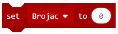
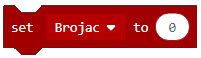
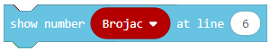
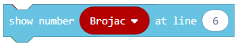
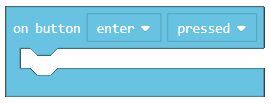
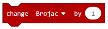

Задача-Средното копче¶
Промеливата съхранява стойностите, които могат да бъдат въведени в програмата по-късно.
Променливата може да бъде:
Числена
Логическа
Текстова
Променливата може да бъде разбрана като пространство в компютърната памет, нещо като кутия, в която можем да съхраняваме временни стойности, докато програмата се изпълнява. Когато искаме да използваме стойността на променливата, достатъчно ще бъде само да използваме името и.
Променливата се създава, като от категорията Variables (1) натиснем Make a variable (2) и въведем името на тази променлива в полето (3). Натискайки бутона ОК (4), създаваме променливата.

WЩе демонстрираме употребата на промеливите чрез програма, която показва колко пъти потребителят е натиснал средния бутон на EV3 Brick-а.
Трябва да създадем променливата  . Ще зададем началната стойност на брояча на 0, използвайки блока . Ще завлечем този блок в
. Ще зададем началната стойност на брояча на 0, използвайки блока . Ще завлечем този блок в  . В него ще посочим и стойността на брояча в самото начало на екрана на EV3 Brick чрез блока .
. В него ще посочим и стойността на брояча в самото начало на екрана на EV3 Brick чрез блока .
Кодът изглежда така:

Задачата изисква програмата да регистрира натискането на копчето от потребителя всеки път, щом това стане. Това ще стане чрез блока:
Задачата изисква програмата да регистрира натискането на копчето от потребителя всеки път, щом това стане. Това ще стане чрез блока  от категория  . Ще използваме блока , за да представим новата стойност на променливата в брояча.
. Ще използваме блока , за да представим новата стойност на променливата в брояча.
Кодът:

Финалния код:

Свържете EV3 Brick-а с компютъра си чрез USB кабел и свалете .uf2 файла на своя компютър, натискайки бутона  . Завлечете файла на EV3 и той ще бъде готов за работа.
. Завлечете файла на EV3 и той ще бъде готов за работа.
Симулация:

Можем да илюстрираме една от променливите с друг пример. Можем да създадем програма, която ще брои колко черни линии LEGO роботът е пресякъл.
Нека създадем променливата . Използвайки блока , ще настроим началната стойност на 0.
После ще завлечем този блок в . В него ще посочим и стойността на брояча в началото чрез блока . В дадения блок ще завлечем и  за да разрешим на робота да се движи продължително.
за да разрешим на робота да се движи продължително.
Кодът изглежда така:

Сензорът трябва да засича черно, което е възможно, благодарение на блока с падащото меню, от което ще изберем нужния цвят:

Когато сензорът засече черно, ще е нужно стойността на брояча да се увеличи с 1. Това ще стане чрез блока от категория . За да представим новата стойност на промеливата Counter (брояч), ще използваме блока .
Кодът изглежда така:

Финалния код изглежда така:

Свържете EV3 Brick-а с компютъра си чрез USB кабел и свалете .uf2 файла на своя компютър, натискайки бутона . Завлечете файла на EV3 и той ще бъде готов за работа.